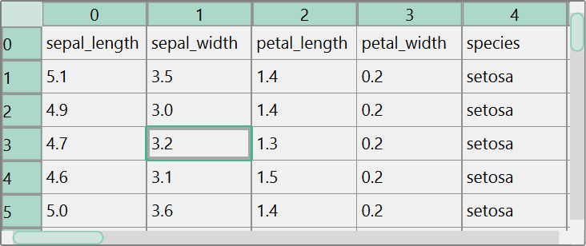
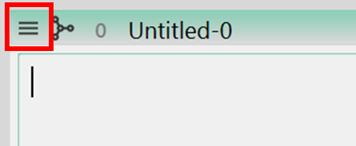
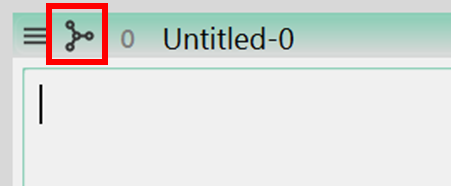
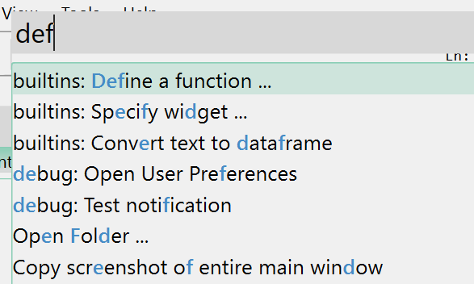
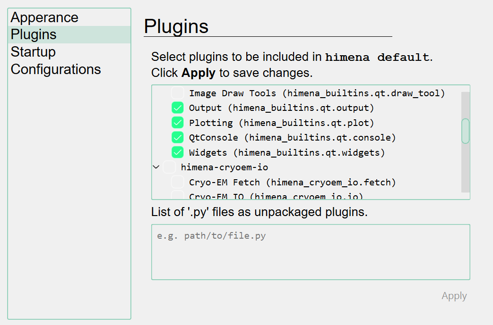

Tutorial
Installation
himena is available on PyPI. You can install it with the recommended dependencies:
pip install himena[recommended]
or with the minimal dependencies:
pip install himena
Start Application
After installation, you can start the application by running the himena command:
himena
himena can manage multiple profiles. A profile is a set of configurations, color theme
and plugins. You can create a new profile of name "test" with:
himena --new test
and start the application with the profile:
himena test
Note
A profile can be used to separate the configurations for different users, or for
different purposes. For example, you can have a profile "img" for image analysis,
in which himena img is just like a sub-command of himena.
Open a Data
Let's start with a simple example. From the menubar, select File > New > Seaborn > iris.
This command will fetch the iris dataset online and open it as a subwindow.

In himena, a subwindow represents a single data model. For example, this iris dataset
is opened as a "table" data model. himena automatically picked the table viewer widget
to display the data.
Of course, you can open a local file from File > Open File(s) ... menu, Ctrl+O
shortcut, drag-and-drop or directly paste the data from the clipboard.
There are also several ways to create a new window. They are listed in File > New
menu, or you can use Ctrl+N shortcut to look for the available options.
Execute Commands
Many commands are registered on the startup of the application. There are several ways to run a command.
Window Menu Button

The "window menu button" pops up a menu that contains the commands relevant to the operation on the current window. These commands are always available regardless of the data model the window represents. For example, "Duplicate window" and "Copy path to cliboard" are in the window menu.
Model Menu Button

The "model menu button" pops up a menu that contains the commands relevant to the type of the underlying data model. For example, the "Convert table to text" is available in the window "iris" just opened above.
Command Palette

All the commands are accessible from the command palette. Press Ctrl+Shift+P to open the command palette and you can search for any commands by the name.
Manage Plugins
himena is designed to be highly extensible. You can install plugins to add new IO
supports, new widgets, and commands. For example, himena-stats,
a himena plugin for statistical analysis, can be installed with the following lines.
pip install himena-stats -U # install to the python virtual environment
himena --install himena-stats # install the module to the default profile
himena your-profile-name --install himena-stats # install to a specific profile
You can also select which plugins to be included in the himena profile from the
setting dialog. A setting dialog can be opened from File > Settings ... or shortcut
Ctrl+,

The Python Interpreter Console
A built-in Qt console dock widget plugin is registered by default. You can oepn it by shortcut Ctrl+Shift+C.